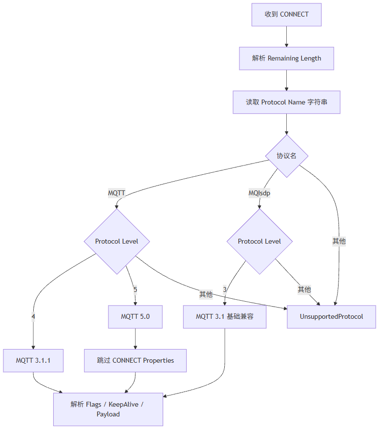

这一篇讲 Broker 侧 CONNECT 解析。重点不是重复 MQTT 标准字段，而是解释为什么MQTT + level 4、MQTT + level 5、MQIsdp + level 3必须分开处理，以及 MQTT 5.0 为什么要跳过属性长度并返回零属性响应。
适合谁收藏
- MQTT 客户端连接 Broker 时反复断开的人
- 想兼容 MQTT 3.1 / 3.1.1 / 5.0 的人
- 正在看
byLastConnectLevel、eLastParseError的人 - 想把 MQTT 报文解析写成可诊断代码的人
客户端连不上 Broker，很多人第一反应是网络问题。
但如果你看到：
udiLastBytesRead > 0
eLastParseError = uiUnsupportedProtocol
byLastConnectLevel = 100先别查交换机。
这说明 TCP 已经读到 CONNECT 了，问题在 MQTT 报文解析。
先给结论：
Broker 侧 CONNECT 不能只认MQTT四个字节。 MQTT 3.1 老协议用的是MQIsdp + level 3；MQTT 3.1.1 用MQTT + level 4；MQTT 5.0 用MQTT + level 5。解析偏移写死，Broker 就会把协议名里的字符当成协议级别。
一、CONNECT 是 Broker 的第一份申请表
Client 侧构造 CONNECT，是“我要申请连接”。 Broker 侧解析 CONNECT，是“我要裁决你能不能进来”。
CONNECT 里至少要回答这些问题：
| 问题 | 对应字段 |
|---|---|
| 你用哪个协议名 | Protocol Name |
| 你用哪个协议级别 | Protocol Level |
| 你是谁 | Client ID |
| 你是否清理会话 | Clean Session / Clean Start |
| 你多久发心跳 | KeepAlive |
| 你有没有遗嘱 | Will Flag / Will Topic / Will Payload |
| 你有没有认证信息 | Username / Password |
| 你是不是 MQTT 5.0 | Properties 是否存在 |
Broker 如果这里判断错，后面 PUBLISH、SUBSCRIBE 都没有意义。
二、三个版本的协议名不是一样的
最容易踩坑的表在这里：
| 协议版本 | Protocol Name | Protocol Level | 典型十六进制 |
|---|---|---|---|
| MQTT 3.1 | MQIsdp | 3 | 00 06 4D 51 49 73 64 70 03 |
| MQTT 3.1.1 | MQTT | 4 | 00 04 4D 51 54 54 04 |
| MQTT 5.0 | MQTT | 5 | 00 04 4D 51 54 54 05 |
你看出问题了吗？
MQTT 3.1 的协议名是 6 字节，不是 4 字节。
如果代码写死：
协议级别 = 协议名起始 + 2 + 4那么遇到 MQIsdp 时，就会读到协议名中间的字符。
MQIsdp 的十六进制是：
4D 51 49 73 64 70
M Q I s d p字符 d 的 ASCII 是 100。 这就是 byLastConnectLevel = 100 的真实来源。
它不是协议级别 100。 它是偏移算错了。
三、CONNECT 解析流程
正确流程应该先读字符串长度，再根据长度读协议名，再读协议级别。

这个流程的关键不是复杂，而是不能偷懒。
四、MQTT 5.0 基础兼容要做两件事
很多客户端默认会尝试 MQTT 5.0。
如果 Broker 完全不理解 MQTT 5.0，可能出现连接闪烁、客户端报 rc -1、服务端槽位一闪即释放。
当前轻量 Broker 的策略不是完整支持 MQTT 5.0 属性系统，而是基础兼容：
| 处理点 | 当前策略 |
|---|---|
| CONNECT Properties | 读取属性长度，并跳过对应字节 |
| CONNACK Properties | 返回零属性长度 |
| PUBLISH Properties | 基础跳过，不解析完整属性 |
| 原因码 / 用户属性 / 会话过期 | 当前不做完整实现 |
MQTT 5.0 的 CONNACK 最小响应不是 3.1.1 那种 4 字节，而是要带属性长度：
20 03 00 00 00拆开看：
| 字节 | 含义 |
|---|---|
20 | CONNACK |
03 | Remaining Length = 3 |
00 | Connect Acknowledge Flags |
00 | Reason Code = Success |
00 | Properties Length = 0 |
如果少了最后这个 00，有些 MQTT 5.0 客户端会认为响应格式不完整。
五、Broker 侧诊断要把协议解析暴露出来
如果只给一个“连接失败”，现场根本没法查。
当前 Broker 诊断里最有价值的是这些字段：
| 字段 | 价值 |
|---|---|
udiLastBytesRead | 判断 TCP 是否已经读到数据 |
xLastConnectParsed | 判断 CONNECT 是否解析成功 |
sLastProtocolName | 判断客户端到底发了 MQTT 还是 MQIsdp |
byLastConnectLevel | 判断协议级别 |
eLastParseError | 判断是协议名、Flags、ClientID 还是长度失败 |
stLastCleanupSnapshot | 槽位释放前保留最后现场 |
现场排查顺序建议：
| 现象 | 判断 |
|---|---|
udiLastBytesRead = 0 | TCP 接入后还没收到 MQTT 首包 |
udiLastBytesRead > 0 且 xLastConnectParsed = FALSE | 报文已到，解析失败 |
sLastProtocolName = MQIsdp | MQTT 3.1 老客户端路径 |
byLastConnectLevel = 100 | 基本就是协议级别偏移误读 |
| MQTT 5.0 客户端连接后断开 | 看 CONNACK 是否带零属性长度 |
六、ST 代码入口
这一篇重点看这些方法：
| 代码入口 | 作用 |
|---|---|
FB_MqttBrokerCodec.M_ParseConnect | 解析 CONNECT，并填充连接信息 |
FB_MqttBrokerConnection.M_ProcessFrame | 根据报文类型调用解析和状态迁移 |
FB_MqttBrokerCodec.M_BuildSimpleAck | 构造 CONNACK、PUBACK、SUBACK 等简单响应 |
F_MqttSkipVariableByteInteger | 跳过 MQTT 5.0 可变字节整数属性长度 |
解析协议名时，原则应该像这样：
// 先读取 MQTT UTF-8 字符串，不能假定协议名长度固定。
xOk := F_MqttReadString(
aBuffer := aRxBuf,
uiOffset := uiOffset,
uiBufferLen := uiFrameLen,
sValue := sProtocolName);
IF NOT xOk THEN
eParseError := E_MqttBrokerError.uiMalformedPacket;
RETURN;
END_IF
// 再读取紧跟在协议名之后的 Protocol Level。
byProtocolLevel := aRxBuf[uiOffset];
uiOffset := uiOffset + 1;
IF (sProtocolName = 'MQTT') AND (byProtocolLevel = 4) THEN
byProtocolVersion := 4;
ELSIF (sProtocolName = 'MQTT') AND (byProtocolLevel = 5) THEN
byProtocolVersion := 5;
ELSIF (sProtocolName = 'MQIsdp') AND (byProtocolLevel = 3) THEN
byProtocolVersion := 3;
ELSE
eParseError := E_MqttBrokerError.uiUnsupportedProtocol;
RETURN;
END_IF核心思想就一句：
先按字符串真实长度移动偏移，再读协议级别。
模型边界与验证路径
CONNECT 解析属于协议边界问题，不是普通字符串解析问题。
协议名、协议级别、属性长度和 Payload 顺序共同决定一个客户端能不能进入 MQTT 会话。如果这里的偏移错了，后面所有状态机都建立在错误数据上。
| 结论 | 可信度 | 依据 | 验证路径 |
|---|---|---|---|
MQTT 3.1 使用 MQIsdp + level 3 | high | MQTT 协议兼容事实和现场解析结果 | 抓取 CONNECT 或观察 sLastProtocolName |
byLastConnectLevel = 100 是偏移误读的强信号 | high | 字符 d 的 ASCII 为 100，且来自 MQIsdp | 同时观察 sLastProtocolName 和原始首包 |
| MQTT 5.0 基础兼容需要零属性响应 | high | MQTT 5.0 CONNACK 报文结构 | 客户端 5.0 连接后观察是否稳定进入 Connected |
这个判断的边界也要说清楚：当前文章讲的是 MQTT 5.0 基础兼容，不是完整属性语义。只要读者依赖 Session Expiry、Topic Alias、User Property 这类能力，就不能把当前轻量 Broker 当成完整 5.0 Broker。
七、这一篇你最该记住的 6 句话
- Broker 侧 CONNECT 解析不能把协议名长度写死成 4。
- MQTT 3.1 是
MQIsdp + level 3，不是MQTT + level 3。 byLastConnectLevel = 100通常不是协议等级，而是误读到了字符d。- MQTT 5.0 基础兼容至少要跳过属性长度，并在 CONNACK 返回零属性长度。
- 连接失败时，如果
udiLastBytesRead > 0，问题大概率已经不在 TCP 层。 - 诊断字段要暴露协议名、协议级别和解析错误，否则现场只能猜。
下篇预告
下一篇讲订阅。
重点是：
SUBSCRIBE 不是存个字符串，Broker 必须维护订阅表、通配符和多客户端路由。
我们会把 Topic Name、Topic Filter、+、#、多 Topic SUBACK、路由匹配全部拆开。
完整 ST 代码
下面这段来自 FB_MqttBrokerCodec.M_ParseConnect.st。重点不是“识别一个字符串”，而是同时支持 MQTT 3.1 的 MQIsdp、MQTT 3.1.1/5.0 的 MQTT，并用协议级别字节决定后续解析规则。
uiProtocolLen := TO_UINT(aBuffer[uiOffset]) * 256 + TO_UINT(aBuffer[uiOffset + 1]);
CASE uiProtocolLen OF
4:
IF (uiOffset + 5) >= uiFrameLen THEN
eError := E_MqttBrokerError.uiProtocolMalformed;
M_ParseConnect := FALSE;
RETURN;
END_IF
IF (aBuffer[uiOffset + 2] <> 16#4D)
OR (aBuffer[uiOffset + 3] <> 16#51)
OR (aBuffer[uiOffset + 4] <> 16#54)
OR (aBuffer[uiOffset + 5] <> 16#54) THEN
eError := E_MqttBrokerError.uiUnsupportedProtocol;
M_ParseConnect := FALSE;
RETURN;
END_IF
uiOffset := uiOffset + 6;
6:
IF (uiOffset + 7) >= uiFrameLen THEN
eError := E_MqttBrokerError.uiProtocolMalformed;
M_ParseConnect := FALSE;
RETURN;
END_IF
// MQTT 3.1 老客户端使用协议名 MQIsdp，协议级别为 3。
// 此处单独分支处理，避免把 3.1.1/5.0 的标准 MQTT 协议名校验放宽。
IF (aBuffer[uiOffset + 2] <> 16#4D)
OR (aBuffer[uiOffset + 3] <> 16#51)
OR (aBuffer[uiOffset + 4] <> 16#49)
OR (aBuffer[uiOffset + 5] <> 16#73)
OR (aBuffer[uiOffset + 6] <> 16#64)
OR (aBuffer[uiOffset + 7] <> 16#70) THEN
eError := E_MqttBrokerError.uiUnsupportedProtocol;
M_ParseConnect := FALSE;
RETURN;
END_IF
uiOffset := uiOffset + 8;
ELSE
eError := E_MqttBrokerError.uiUnsupportedProtocol;
M_ParseConnect := FALSE;
RETURN;
END_CASEMQTT 5.0 的关键坑在属性区。当前 Broker 不解释高级属性，但必须把属性长度字段正确跳过，否则 ClientID 解析会整体错位。
IF stConnection.byProtocolLevel = GVL_MqttBroker.cnMqttProtocolLevel5 THEN
// MQTT 5.0 在 KeepAlive 后增加 CONNECT Properties。
// 当前 Broker 定位为工业轻量兼容，不解释 User Property / Session Expiry 等高级属性，
// 但必须严格跳过属性长度字段，避免后续 ClientID 解析错位导致 5.0 客户端无法连接。
IF NOT F_MqttSkipVariableByteInteger(
aBuffer := aBuffer,
uiOffset := uiOffset,
uiBufferLen := uiFrameLen,
udiValue => udiPropertyLen) THEN
eError := E_MqttBrokerError.uiProtocolMalformed;
M_ParseConnect := FALSE;
RETURN;
END_IF
IF (TO_UDINT(uiOffset) + udiPropertyLen) > TO_UDINT(uiFrameLen) THEN
eError := E_MqttBrokerError.uiProtocolMalformed;
M_ParseConnect := FALSE;
RETURN;
END_IF
uiOffset := uiOffset + TO_UINT(udiPropertyLen);
END_IF
评论区预留
这里先保留评论和回复结构，不接入第三方服务。后续统一决定登录、匿名、审核、反垃圾和静态站兼容策略。